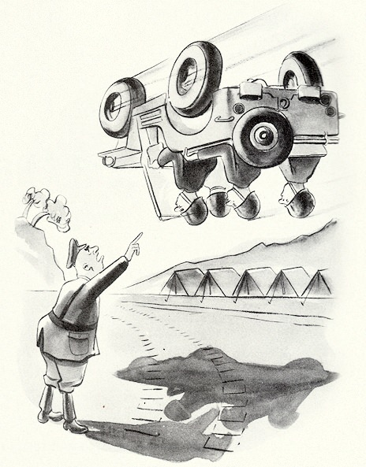

“I don’t give a damn if NZ is ‘down under’—you men quit doing that!”
POCKET GUIDE TO NEW ZEALAND
CONTENTS
- Deep in the Heart of the South Seas1
- Way Back When5
- Meet the People7
- The Country11
- What Is a Dominion?16
- How New Zealand Makes Its Living18
- New Zealand’s Monuments19
- Food and Drink—and Tea!20
- The Sporting Life26
- New Zealand and the War30
- How They Talk34
- Glossary of Terms35
- Slanguage37
- Glossary of Slang38
- Weights and Measures42
- Conclusion 42